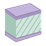

Two heights. Your priority.
Maximise your preferred profile and fill the remaining height with the second. The layout height adjusts to fit complete rows.

SandwichCreatorInsulated sandwich panels, flashings and finishes.
Build your facade to your own rules
in one Windows application.
By ID or selection in Archicad
Profile, thickness, RAL and joints
With geometry and property checks
Every joint considered
From a single wall to open wall chains and T-junctions. Set your rules once and the app applies them throughout the layout.
Maximise your preferred profile and fill the remaining height with the second. The layout height adjusts to fit complete rows.
Seven thicknesses from 50 to 200 mm. Select an exterior RAL colour or enter a code. The interior is RAL 9003; flashings match the facade.
Separate short panels are created beside openings. Flashings are split into sections to keep windows and doors clear.
Original wall lines stay in place. Set a range for joints between panel ends; the default is 10–25 mm.
Lengths are rounded to the nearest centimetre. Matching lengths and profiles share an ID. Reassign IDs after manual changes.
Exterior and interior colours, profile height and thickness are saved as custom panel properties.
Your project. A calmer interface.
Related settings are grouped together.
A soft palette keeps the focus on your project.

Enter source wall IDs or use the current selection in Archicad.
Screenshots show the current Russian-language app interface.
A few steps to your first facade
Panel and flashing profiles are embedded in the EXE. No sample elements are needed in your source project.
Open your project and make sure the Tapir add-on is available.
Connect to Archicad and read the source walls. No separate Python installation is required.
Choose your settings, review the layout plan and panel types, then create the elements in Archicad.
Less repetition. More design.
SandwichCreator 1.6.3 · Windows x64
Requires Archicad and the Tapir add-on on the same computer. Openings require the corresponding Archicad library.
A few things to know
This build has been tested with Archicad 27 and Tapir 1.7.3. Compatibility with other versions needs to be checked separately.
Yes. Choose from 15 suggested colours or enter a code from the built-in RAL Classic catalogue. On-screen colour swatches are approximate.
The panel ID reassignment button checks current profiles and 3D lengths, rounds lengths to the nearest centimetre and groups matching panels.
Save your source project and try a small wall outline. Before creating elements, review the layout plan, adjusted heights and panel type table. You can turn off source wall deletion in the app.